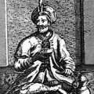

História do Café

Não há evidência real sobre a descoberta do café, mas há muitas lendas que relatam sua possível origem. Uma das mais aceitas e divulgadas é a do pastor Kaldi, que viveu na Absínia, hoje Etiópia, há cerca de mil anos. Ela conta que Kaldi, observando suas cabras, notou que elas ficavam alegres e saltitantes e que esta energia extra se evidenciava sempre que mastigavam os frutos de coloração amarelo-avermelhada dos arbustos existentes em alguns campos de pastoreio. O pastor notou que as frutas eram fonte de alegria e motivação, e somente com a ajuda delas o rebanho conseguia caminhar por vários quilômetros por subidas infindáveis.
Kaldi comentou sobre o comportamento dos animais a um monge da região, que decidiu experimentar o poder dos frutos. O monge apanhou um pouco das frutas e levou consigo até o monastério. Ele começou a utilizar os frutos na forma de infusão, percebendo que a bebida o ajudava a resistir ao sono enquanto orava ou em suas longas horas de leitura do breviário. Esta descoberta se espalhou rapidamente entre os monastérios, criando uma demanda pela bebida. As evidências mostram que o café foi cultivado pela primeira vez em monastérios islâmicos no Yemen.